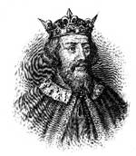

Büyük Alfred (849-899), İngiltere’nin ilk kralıdır. Gerçekten de tarihte İngiltere adını ilk kullanan kişi olarak kayıtlara geçmiştir. Bir Viking istilasına karşı koymak için çeşitli Anglosakson krallıklarını birleştirmiştir. Onun döneminde İngiltere’de bilim ve edebiyatın yükseliş dönemi başlamıştır. İsgalcilerin ülkeden atılmasında oynadığı rol nedeniyle Alfred, ülke tarihinde “büyük” adıyla anılan tek kral olmuştur.

İngiltere, Alfred doğduğu sırada Sakson savaş lordları tarafından yönetilen çeşitli krallıklar arasında bölünmüştü. Alfred, Kral Etfhelwulf’un beşinci oğluydu. Beşinci oğul olduğu için kral olması asla beklenmiyordu. Nitekim papazlık eğitimi almıştı. Çocukken Roma’ya gidip Latince öğrenmiş ve hatta Papa 4. Leo tarafından Roma konsülü olarak seçilmişti.
865 yılındaki Viking istilasının ardından Wessex savunmasının hazırlanması için ağabeylerine katıldı. Northumbria ve Doğu Anglia Sakson krallıklarını yıkan Vikingler, 870’de Wessex’e vardılar. Neyse ki Afred ve kardeşi Ethelred onları yenilgiye uğrattı. 871 yılındaki Ashdown Savaşı’nda Danimarkalılar’a yönelik ağır bir saldırı başlattı. Aynı yıl, kardeşi Etheldred’in muhtemelen savaşta yaralanarak ölmesi üzerine yirmi kik yaşında kral oldu.
Sonraki on yıllar boyunca Alfred Vikingler’i adadan çıkarmak için mücadele etti. 886 yılında Londra’yı ele geçirdi. Bu süreçte bölünmüş krallıkları İngiliz halkının toprağı anlamına gelen “Angelcynn Krallığı” altında birleştirdi. Öldüğü zaman Danimarkalılar, Doğu İngiltere’de küçük bir alana sıkıştırılmışlardı.
Ülkesini yeni birleştirmiş bir kral olarak Alfred, bilimi canlandırmak ve Viking Savaşları sırasında yıkılmış olan manastırları yeniden inşa etmekle uğraştı. Bir okul açtı ve Latince yazılmış üç cilt dini ve tarihsel metni Anglosakson diline tercüme etti. Asıl arzusunu dönemin tarihçileri şöyle aktarırlar: “Eğer barış olursa, İngiltere’deki bütün gençler kendilerini eğitime adayacaklar.”
Elli yaşında öldü ve yerine büyük oğlu Edward (870-924) geçti.
Ek Bilgiler
1- İngiltere’nin Viking kontrolünde kalan bölümleri, Danelaw olarak adlandırıldı. Doğu İngiltere’de “by” ya da “thorp”la biten yer adları, genellikle Danimarkalılar’dan kalmadır.
2- New York eyaletinin kuzeyinde yer alan bir özel okul olan Alfred Üniversitesi, adını kraldan alır. Bu üniversitenin spor klubünün ismi Saksonlar’dır.
3- Alfred’in İngiliz toplumuna yaptığı bir başka önemli katkı, uygulamaya koyduğu yasal düzenlemelerdir. Thomas Jefforson’dan (1743-1826) Winston Churchill’e (1874-1965) kadar çeşitli liderler bu düzenlemelerin önemini vurgulamışlardır. Zayıf ve savunmasız durumdaki insanlara yasal güvenceler getirmeye çalışmış, düelloyu kısıtlamış ve İngiliz teamül hukukunun temellerini atmıştır.